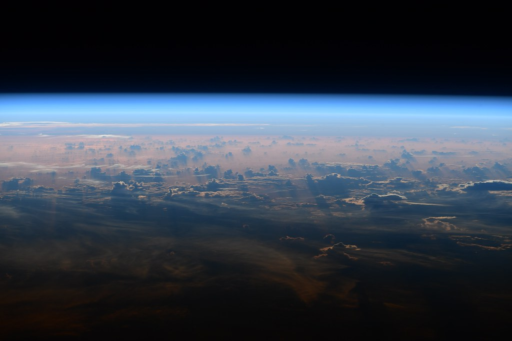
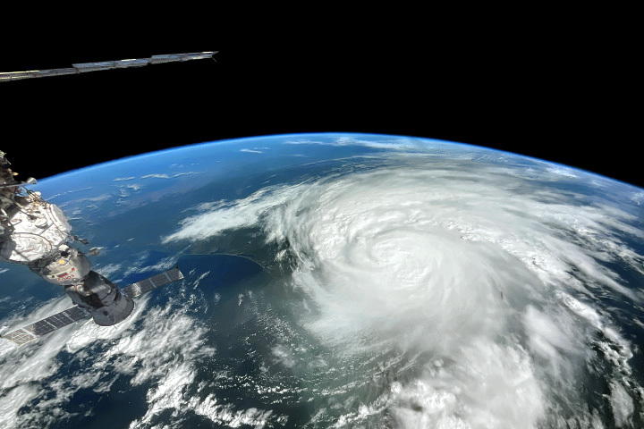
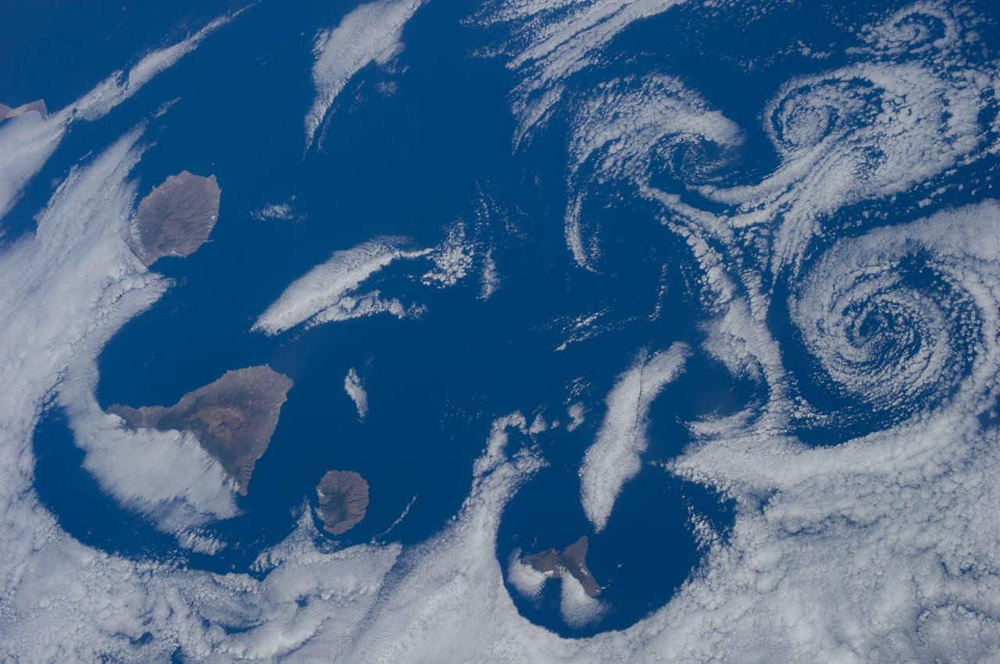
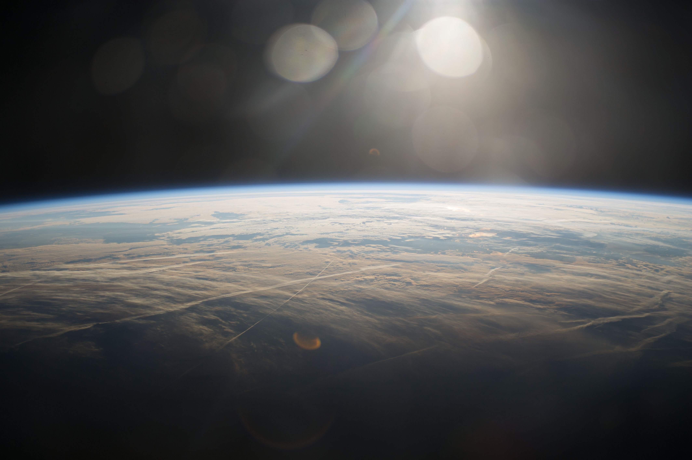
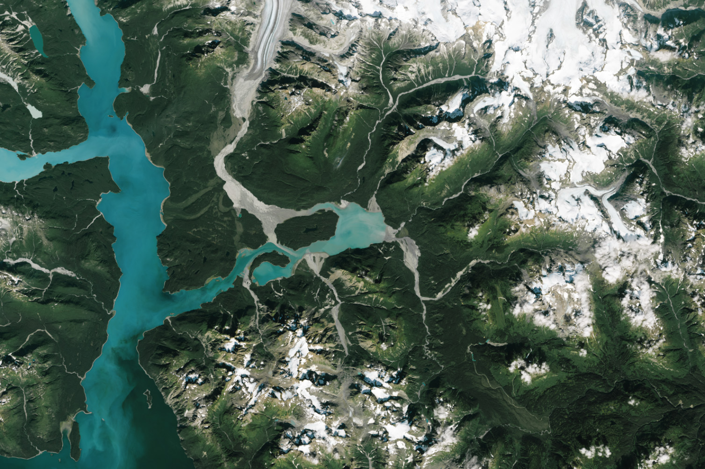
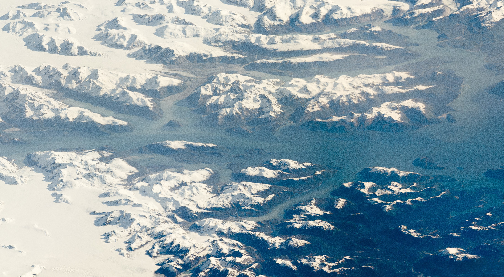
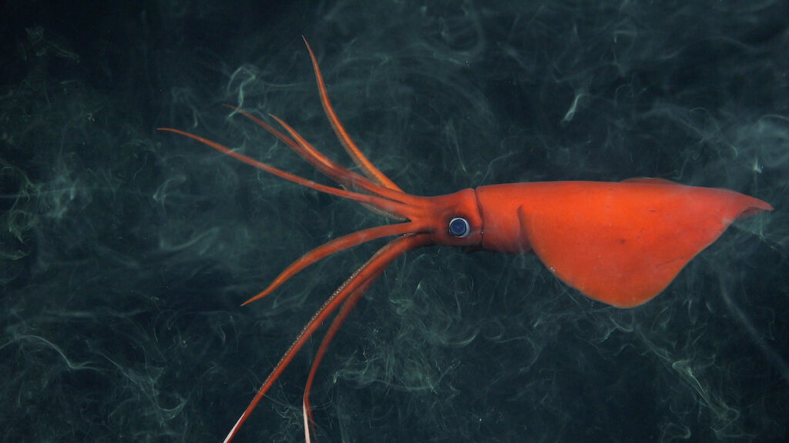
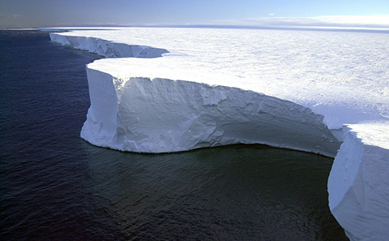

-
Night Light Maps Open Up New Applications
https://earthobservatory.nasa.gov/images/90008/night-light-maps-open-up-new-applications -

Earth Horizon - Thomas Pesquet
https://www.flickr.com/photos/thom_astro/51641151118/ -

Hurricane Idalia Moves Inland
https://visibleearth.nasa.gov/images/151776/hurricane-idalia-moves-inland -

Earth Observation
https://images.nasa.gov/details/iss036e016263 -

Earth Observation
https://images.nasa.gov/details/iss040e080833 -
 Dunes and Desert Replace the Aral Sea
Dunes and Desert Replace the Aral Sea
https://earthobservatory.nasa.gov/images/152887/dunes-and-desert-replace-the-aral-sea -

A Geological Wonderland in Alaska
https://earthobservatory.nasa.gov/images/152864/a-geological-wonderland-in-alaska -

Glacier Bay National Park & Preserve
https://earthobservatory.nasa.gov/images/88701/glacier-bay-national-park-preserve -
 China’s Celestial Mountains
China’s Celestial Mountains
https://earthobservatory.nasa.gov/images/150774/chinas-celestial-mountains -
 Mt. Kosciuszko
Mt. Kosciuszko
https://earthobservatory.nasa.gov/images/3565/mt-kosciuszko -
 A squat lobster perched in coral
A squat lobster perched in coral
https://schmidtocean.photoshelter.com/galleries/C0000QszlkoaNkKU/G0000ISlDmCQILdA/I0000XrCHjphatwc/A-squat-lobster-perched-in-coral -

A rarely-seen whiplash squid (Mastigopsis hjorti)
https://schmidtocean.photoshelter.com/galleries/C0000QszlkoaNkKU/G0000ISlDmCQILdA/I0000nvwDpR7Rx9Q/A-rarely-seen-whiplash-squid-Mastigopsis-hjorti -

File:Research on Iceberg B-15A by Josh Landis, National Science Foundation
https://en.wikipedia.org/wiki/File:Research_on_Iceberg_B-15A_by_Josh_Landis,_National_Science_Foundation_(Image_4)_(NSF).jpg
_(NSF).jpg){kind=link}